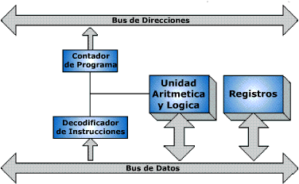

Rendimiento del Procesador
El rendimiento del procesador se refiere a su capacidad para ejecutar instrucciones y procesar datos de forma rápida y eficiente. Factores clave que influyen en este rendimiento incluyen la velocidad de reloj (GHz), el número de núcleos e hilos, la memoria caché y la arquitectura interna del chip. Un procesador con mayor velocidad de reloj puede realizar más operaciones por segundo, mientras que múltiples núcleos permiten ejecutar varias tareas al mismo tiempo. La caché acelera el acceso a datos frecuentes, reduciendo el tiempo de espera. Además, la eficiencia energética también afecta el rendimiento, especialmente en dispositivos móviles. Tecnologías como la ejecución paralela, la inteligencia artificial integrada y la optimización del sistema operativo también juegan un papel importante. En conjunto, estos elementos determinan qué tan bien responde un procesador bajo diferentes tipos de carga de trabajo.
